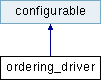

|
潮風フレームワーク
研究開発に特化したコンピューターグラフィックスのための流体ソルバ
|


|
|
潮風フレームワーク
研究開発に特化したコンピューターグラフィックスのための流体ソルバ
|
|
ordering_core の使用を支援する configurable クラス。 [詳解]
#include <ordering_driver.h>

公開メンバ関数 | |
| ordering_driver (recursive_configurable *parent) | |
| ordering_driver のコンストラクタ。 [詳解] | |
| ordering_driver () | |
| ordering_driver のコンストラクタ。 | |
| const ordering_core & | operator() () const |
| ordering_core へのインスタンスを取得する。 [詳解] | |
| const void * | new_context (const shape2 &shape) const |
| 2次元形状のコンテクストを作成する。 [詳解] | |
| const void * | new_context (const shape3 &shape) const |
| 3次元形状のコンテクストを作成する。 [詳解] | |
| void | delete_context (const void *context) const |
| new_context で作成されたコンテクストを解放する。 [詳解] | |
| std::function< size_t(const void *context, int i, int j)> | get_encoder_func2 (const void *context) const |
| 2次元コンテクストからエンコード関数を取得する。 [詳解] | |
| std::function< size_t(const void *context, int i, int j, int k)> | get_encoder_func3 (const void *context) const |
| 3次元コンテクストからエンコード関数を取得する。 [詳解] | |
| std::vector< ordering_core::decoder_func2 > | get_decoder_func2 (const void *context) const |
| new_context で作成されたコンテクストに対する2次元のデコーダー関数を取得する。 [詳解] | |
| std::vector< ordering_core::decoder_func3 > | get_decoder_func3 (const void *context) const |
| new_context で作成されたコンテクストに対する3次元のデコーダー関数を取得する。 [詳解] | |
 基底クラス configurable に属する継承公開メンバ関数 基底クラス configurable に属する継承公開メンバ関数 | |
| virtual void | configure (configuration &config) |
| プログラムの設定を実際に行う。パラメータの読み込みと設定に使われる。 [詳解] | |
| virtual void | initialize (const environment_map &environment) |
| プログラムの初期化を行う。実際にプログラムを実行可能な状態を作るために使われる。 [詳解] | |
| virtual void | setup_now (configuration &config=get_global_configuration()) |
| load - configure - initialize のプロセスを呼ぶ。 | |
| virtual bool | not_recursive () |
| recursive_configurable から継承されたインスタンスでないか確認する。 [詳解] | |
その他の継承メンバ | |
| 基底クラス configurable に属する継承公開型 | |
| using | environment_map = std::map< std::string, const void * > |
| environment_map のタイプ。 | |
| 基底クラス configurable に属する継承静的公開メンバ関数 | |
| static configuration & | set_global_configuration (const configuration &config) |
| グローバルの設定を与える。 [詳解] | |
| static configuration & | get_global_configuration () |
| グローバルの設定を取得する。 [詳解] | |
| template<class T > | |
| static const T & | get_env (const environment_map &environment, std::string key) |
| 入力の環境のインスタンスから、指定された種類のポインターを取得する。 [詳解] | |
| 基底クラス configurable に属する継承限定公開メンバ関数 | |
| bool | check_set (const environment_map &environment, std::vector< std::string > names) |
| 変数のキーの配列に対応する値が存在するか取得する。 [詳解] | |
ordering_core の使用を支援する configurable クラス。
|
inline |
ordering_driver のコンストラクタ。
| [in] | recursive_configurable | のインスタンスへのポインタ。 |
|
inline |
new_context で作成されたコンテクストを解放する。
| [in] | context | new_context で作成されたコンテクスト。 |
|
inline |
new_context で作成されたコンテクストに対する2次元のデコーダー関数を取得する。
| [in] | context | new_context で作成されたコンテクスト。 |
|
inline |
new_context で作成されたコンテクストに対する3次元のデコーダー関数を取得する。
| [in] | context | new_context で作成されたコンテクスト。 |
|
inline |
2次元コンテクストからエンコード関数を取得する。
| [in] | context | new_context で作成されたコンテクスト。 |
|
inline |
3次元コンテクストからエンコード関数を取得する。
| [in] | context | new_context で作成されたコンテクスト。 |
|
inline |
2次元形状のコンテクストを作成する。
| [in] | shape | 形。 |
|
inline |
3次元形状のコンテクストを作成する。
| [in] | shape | 形。 |
|
inline |
ordering_core へのインスタンスを取得する。
 1.8.17
1.8.17